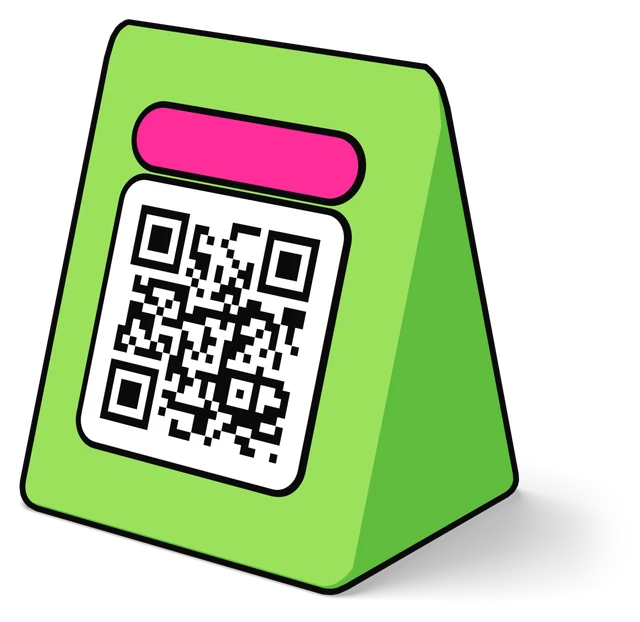

Példa Bisztró
újLovely goulash and very friendly staff.
Megválaszolva: 2026. szept. 25.Megnyitás a Google-on
szept. 26., szombat
Jó reggelt. Ma 6 válasz vár rád.kész
Elsőként: tegnapi 2 csillagos értékelés
A leves langyos volt, és húsz percet vártunk a számlára.
Válasz átnézéseMég 5 válasz vár rád.
Válasz nélkül
A leves langyos volt, és húsz percet vártunk a számlára.
Nincs jóváhagyásra váró válasz, és az elmúlt héten nem maradt súlyos értékelés válasz nélkül.
Ehhez a fiókhoz még nincs aktív étterem. Vedd fel az elsőt az Éttermek oldalon.
8 új Ezek érkeztek tegnap, minden étteremből.
Letöltöttük a legutóbbi 200 értékelést. Ezt mutatják most a számok.
4 negatív értékelés vár válaszra az elmúlt 30 napból. Értékelések megnyitása
A holnapi napi jelentésben csak az ezután érkező értékelések számítanak újnak.
8 új értékelés érkezett ebben az időszakban. Az átlaguk 3,88.
Ebben az időszakban nem érkezett új értékelés egyik étteremhez sem.
Új: az az értékelés, amit a Google erre az időszakra dátumoz.
| Étterem | Új | 5 csillagos | 4 csillagos | 3 csillagos | 2 csillagos | 1 csillagos | Átlag | Google-értékelés | Összes értékelés |
|---|
Étterem új értékeléssel: 3 / 3
8 új, tegnap óta
2134 találat
Minden értékelés, amit a Google-on találtunk. Szűrd le, amire kíváncsi vagy.
Ehhez a fiókhoz még nincs étterem. Vedd fel az elsőt az Éttermek oldalon.
Lovely goulash and very friendly staff.
Kedves kiszolgálás, a gyerekeknek is volt menü.
Húsz percet vártunk az asztalra, pedig foglaltunk.
Jó a kávé. A sütit legközelebb melegebben kérném.
Csak csillagozás, szöveg nélkül.
Rendben volt minden, csak hangos a zene.
Isteni volt a rántott csirke, és gyorsan kihozták.
A leves langyos volt, és húsz percet vártunk a számlára.
Gutes Essen, aber etwas laut.
Hideg volt a köret, és senki nem kérdezte, milyen volt.
Nyugodt hely, jó zene, finom a kakaós csiga.
Sokat vártunk, és a pincér elfelejtette az italt.
Nincs a szűrésnek megfelelő értékelés. Vedd le a szűrők egyikét.
6 vár rád
Itt olvasod el a válaszokat, mielőtt kimennek a Google-re.
Jóváhagyásra vár: 6. A jóváhagyott választ mi tesszük ki a Google-re. Amire nem válaszolsz, azt lezárjuk válasz nélkül.
1 / 6
A leves langyos volt, és húsz percet vártunk a számlára.
Billentyűk: A jóváhagy, S nem válaszol, J és K lépked, E szerkeszt, O megnyitja a Google-t, U visszavon.
Nincs jóváhagyásra váró válasz. Ahogy új értékelés érkezik, a válasz itt jelenik meg.
Néhány percen belül kitesszük a Google-re azoknál az éttermeknél, ahol van Google-hozzáférésünk. A többinél a szöveget kézzel kell bemásolni.
Kedves kiszolgálás, a gyerekeknek is volt menü.
A jóváhagyott szöveg
Kedves Réka, köszönjük a kedves szavakat. Örülünk, hogy a gyerekek is jól érezték magukat. Várjuk vissza. A Minta Étterem csapata
Az utolsó 50 lezárt válasz.
| Dátum | Étterem | Állapot | Szöveg |
|---|---|---|---|
| 2026. szept. 25. 22:10 | Példa Bisztró | közzétéve | Dear Emma, thank you for your kind words. We are glad you enjoyed the goulash. The Példa Bisztró team |
| 2026. szept. 25. 17:30 | Teszt Kávézó | közzétéve | Kedves Márk, köszönjük a csillagokat. Várjuk vissza. A Teszt Kávézó csapata |
| 2026. szept. 22. 09:05 | Példa Bisztró | közzétéve | Kedves Tamás, sajnáljuk, hogy hideg volt a köret. Továbbadtuk a konyhának. A Példa Bisztró csapata |
Hogyan alakultak a számok az időszakban, éttermenként.
Ebben az időszakban még nincs napi értékelési adat. A vonal az első napi ellenőrzés után jelenik meg.
Ehhez a fiókhoz még nincs aktív étterem. Vedd fel az elsőt az Éttermek oldalon.
146 új értékelés érkezett ebben az időszakban.
Éttermenként, a napi ellenőrzés szerint. Kattints egy étterem nevére az elrejtéséhez vagy megjelenítéséhez.
Minden étterem el van rejtve. Kattints egy névre a megjelenítéséhez.
Az összes étterem együtt, a napi összesítők szerint.
| Téma | Értékelés | Éttermek |
|---|---|---|
| az ételek minősége | 38 | 3 |
| kedves személyzet | 27 | 3 |
| a kiszolgálás gyorsasága | 15 | 2 |
| hangulat | 12 | 3 |
| kávé | 9 | 1 |
| Téma | Értékelés | Éttermek |
|---|---|---|
| várakozás | 6 | 2 |
| az étel hőmérséklete | 3 | 1 |
| zaj | 3 | 2 |
| árak | 2 | 2 |
A témák az elemzett értékelésekből származnak, és egy értékelés egy témát egyszer számít. Panasz: negatív hangulatú, vagy 3 csillagos és gyengébb értékelés. Dicséret: pozitív hangulatú, vagy 4 csillagos és jobb értékelés.
| Étterem | Új | Átlag | 1 vagy 2 csillag | Megválaszolatlan negatív | Google-értékelés most | Változás | Összes értékelés |
|---|
Új: az az értékelés, amit a Google erre az időszakra dátumoz. A változás az időszak első és utolsó napi ellenőrzése közötti különbség.
A napi jelentés 07:00-kor megy ki, Europe/Budapest idő szerint.
Válaszd ki, hogyan nézzen ki nálad a BistroTech. Csak te látod így, a csapatod többi tagja a sajátját állítja be.
Válaszírás bekapcsolva
Minden megválaszolatlan értékeléshez megírjuk a választ. A Válaszok oldalon vár a jóváhagyásodra, és csak a jóváhagyott szöveg megy ki a Google-re.
Automatikus válaszolás
Kikapcsolva: minden választ jóvá kell hagyni, mielőtt kimegy a Google-re.
A 4 csillagos és jobb értékelésekre magától kimegy a válasz a Google-re. Ezeket senki nem olvassa el előtte.
Ezzel a beállítással az egy- és kétcsillagos értékelésekre is kimegy válasz, úgy, hogy előtte senki nem olvassa el. A válasz a saját Google-profilodon jelenik meg, és a vendégeid látják. Bármikor visszakapcsolhatod.
Az üzenetek Telegramon érkeznek. Mindhárom címzettet te magad kötöd össze, privát beszélgetésként vagy egy csoporttal.
Napi jelentés
Ide érkezik minden reggel a napi jelentés, és itt kérdezhetsz az asszisztenstől az értékelésekről.
Marketing
A heti összefoglaló a helyezésekről.
Riasztás
Hibaüzenetek a fiók tulajdonosainak. Csak akkor jön üzenet, ha valami nem működik.
Az első lépések egy helyen: étterem felvétele, Telegram összekötése, az első jelentés ideje.
3 étterem
Minden étterem, amit figyelünk. A számok a legutóbbi Google-ellenőrzésből valók.
Ehhez a fiókhoz még nincs étterem. Vedd fel az elsőt, és holnap reggel jön az első jelentés.
4,6Google-értékelés
1284Összes értékelés
Ezek a megjegyzések irányítják, hogyan szóljanak ennek az étteremnek a válaszai.
4,4Google-értékelés
612Összes értékelés
Ezek a megjegyzések irányítják, hogyan szóljanak ennek az étteremnek a válaszai.
4,7Google-értékelés
238Összes értékelés
Ezek a megjegyzések irányítják, hogyan szóljanak ennek az étteremnek a válaszai.
Nincs összekapcsolva: Teszt Kávézó
Ennek az étteremnek az értékeléseit akkor látjuk, ha a mi fiókunk is kezelője a Google cégprofilnak. Vedd fel kezelőnek ezt a címet: kezelo@pelda.invalid. Utána nyomd meg a Kapcsolat ellenőrzése gombot.
Írd be az étterem nevét, akár a várossal együtt, és keresd meg a Google-ön.
Példa Bisztró
A felvétel után rögtön letöltjük a legújabb értékeléseket. Az első napi jelentés a következő reggel érkezik.
Egy rövid link és egy QR-kód, asztali kártyára, számlára vagy üzenetbe. Aki megnyitja, a Google-on írhat értékelést.

14 napigingyen
Három lépés, és holnap reggel megérkezik az első jelentés.
A fiókod kész. 14 napig kipróbálhatod. Bankkártya nem kell.
Keresd meg az éttermet a Google-ben, és add hozzá. További éttermeket később az Éttermek oldalon vehetsz fel.
Példa Bisztró
Példa Bisztró Terasz
0letöltve
Példa Bisztró
Letöltjük a legújabb értékeléseket. Ez egy-két perc.
A Google cégprofil összekapcsolásáról az Éttermek oldal ad útmutatót. Az értékelések olvasásához nincs rá szükség.
A napi jelentés Telegramon érkezik. Kösd össze a címzettjét: egy privát beszélgetést veled, vagy egy csoportot a csapatoddal.
Nyisd meg Telegramon, és nyomd meg a Start gombot.
Vedd fel a csoportba a BistroTech Telegram-fiókját.
Küldd el ezt az üzenetet a csoportban:
/link K7Q2-M9TX
A kód 10 percig érvényes.
A marketing és a riasztás címzettjét a Beállítások oldalon kötheted össze.
Holnap reggel 07:00
Éttermek: 1
Napi jelentés: összekötve.
Az első jelentés holnap reggel 07:00-kor érkezik (Europe/Budapest). Csak az ezután érkező értékelések számítanak benne újnak.
Az órát a Beállítások oldalon módosíthatod.
· Az útmutató később is elérhető a Beállítások oldalról.
Jóváhagyva.
Ehhez az étteremhez még nem tudunk a Google-re írni. Másold ki a választ, és nyisd meg az értékelést a Google-on.
BISTROTECH NAPI JELENTÉS
2026. szept. 26., szombat
Példa Bisztró · 3 új · átlag 4,00
5 csillagos:2 4 csillagos:0 3 csillagos:0 2 csillagos:1 1 csillagos:0
Google: 4,6 (1284)
Minta Étterem · 3 új · átlag 3,33
5 csillagos:1 4 csillagos:0 3 csillagos:1 2 csillagos:1 1 csillagos:0
Google: 4,4 (612)
Teszt Kávézó · 2 új · átlag 4,50
5 csillagos:1 4 csillagos:1 3 csillagos:0 2 csillagos:0 1 csillagos:0
Google: 4,7 (238)
Σ Összesen: 8 új értékelés
5 csillagos:4 4 csillagos:1 3 csillagos:1 2 csillagos:2 1 csillagos:0
Megválaszolatlan negatívok · 3
Példa Bisztró · 2 csillag · szept. 25.
„A leves langyos volt, és húsz percet vártunk a számlára.”
Minta Étterem · 2 csillag · szept. 25.
Minta Étterem · 3 csillag · szept. 25.
7:00
A leves langyos volt, és húsz percet vártunk a számlára.
Kedves Katalin, köszönjük, hogy megírta. Sajnáljuk, hogy langyos volt a leves, és sokat kellett várnia a számlára. Továbbadtuk a konyhának és a felszolgálóknak. Reméljük, visszatér, és akkor minden a helyén lesz. A Példa Bisztró csapata
Kedves Katalin, köszönjük, és sajnáljuk a langyos levest meg a hosszú várakozást. Továbbadtuk a csapatnak. A Példa Bisztró csapata
Kedves Katalin, nagyon köszönjük, hogy időt szánt ránk. Bosszant minket, hogy langyos volt a leves, és hogy ennyit kellett várnia a számlára. Továbbadtuk a konyhának és a felszolgálóknak. Szeretnénk, ha legközelebb jó szívvel állna fel az asztaltól. A Példa Bisztró csapata
Kedves Katalin, köszönjük a visszajelzést. A leves hőmérséklete és a húsz perc várakozás a számlára nem felel meg annak, ahogy dolgozni szeretnénk. Mindkettőt továbbadtuk a konyhának és a felszolgálóknak. A Példa Bisztró csapata
Kedves Katalin, köszönjük, hogy megírtad. Sajnáljuk, hogy langyos volt a leves, és sokat kellett várnod a számlára. Továbbadtuk a konyhának és a felszolgálóknak. Reméljük, visszajössz, és akkor minden a helyén lesz. A Példa Bisztró csapata
Húsz percet vártunk az asztalra, pedig foglaltunk.
Kedves Gergő, köszönjük, hogy szólt. Sajnáljuk, hogy a foglalás ellenére húsz percet kellett várniuk az asztalra. Megnézzük, hol csúszott el a foglalás, és továbbadtuk a csapatnak. A Minta Étterem csapata
Kedves Gergő, köszönjük, és sajnáljuk a várakozást a foglalás ellenére. Továbbadtuk a csapatnak. A Minta Étterem csapata
Kedves Gergő, nagyon köszönjük, hogy megírta. Bosszant minket, hogy a foglalás ellenére ennyit kellett várniuk. Megnézzük, hol csúszott el, és szeretnénk, ha legközelebb azonnal leülhetnének. A Minta Étterem csapata
Kedves Gergő, köszönjük a visszajelzést. Egy foglalt asztalra nem szabad húsz percet várni. Megnézzük, hol csúszott el a foglalás, és ezt a csapattal is megbeszéljük. A Minta Étterem csapata
Kedves Gergő, köszönjük, hogy szóltál. Sajnáljuk, hogy a foglalás ellenére húsz percet kellett várnotok az asztalra. Megnézzük, hol csúszott el a foglalás, és továbbadtuk a csapatnak. A Minta Étterem csapata
Rendben volt minden, csak hangos a zene.
Kedves Bence, köszönjük, hogy megírta. Sajnáljuk, hogy hangos volt a zene. Továbbadtuk a csapatnak, és figyelünk rá. A Minta Étterem csapata
Kedves Bence, köszönjük. A zenéről írtakat továbbadtuk. A Minta Étterem csapata
Kedves Bence, köszönjük, hogy időt szánt ránk, és örülünk, hogy minden rendben volt. A zenét mi is olyan hangerőn szeretnénk tartani, hogy jólessen mellette beszélgetni. Továbbadtuk a csapatnak. A Minta Étterem csapata
Kedves Bence, köszönjük a visszajelzést. A zene nem lehet hangosabb a beszélgetésnél. Ezt továbbadtuk a csapatnak. A Minta Étterem csapata
Kedves Bence, köszönjük, hogy megírtad. Sajnáljuk, hogy hangos volt a zene. Továbbadtuk a csapatnak, és figyelünk rá. A Minta Étterem csapata
Gutes Essen, aber etwas laut.
Liebe Lili, vielen Dank für Ihren Besuch. Es freut uns, dass Ihnen das Essen geschmeckt hat. Den Hinweis zur Lautstärke haben wir an das Team weitergegeben. Ihr Team vom Minta Étterem
Liebe Lili, vielen Dank. Den Hinweis zur Lautstärke haben wir weitergegeben. Ihr Team vom Minta Étterem
Liebe Lili, herzlichen Dank für Ihren Besuch und Ihre Worte. Schön, dass Ihnen das Essen geschmeckt hat. Beim nächsten Mal soll es auch etwas ruhiger sein, das haben wir an das Team weitergegeben. Ihr Team vom Minta Étterem
Liebe Lili, danke für die Rückmeldung. Die Lautstärke sollte ein Gespräch nicht stören. Das haben wir mit dem Team besprochen. Ihr Team vom Minta Étterem
Liebe Lili, vielen Dank für deinen Besuch. Es freut uns, dass dir das Essen geschmeckt hat. Den Hinweis zur Lautstärke haben wir an das Team weitergegeben. Dein Team vom Minta Étterem
Jó a kávé. A sütit legközelebb melegebben kérném.
Kedves Dóra, köszönjük, hogy megírta. Örülünk, hogy ízlett a kávé. A sütiről írtakat továbbadtuk a pultnak. A Teszt Kávézó csapata
Kedves Dóra, köszönjük. A sütiről írtakat továbbadtuk a pultnak. A Teszt Kávézó csapata
Kedves Dóra, nagyon köszönjük a kedves sorokat. Örülünk, hogy ízlett a kávé, és legközelebb a sütit is melegen szeretnénk az asztalra tenni. Szólunk a pultnak. A Teszt Kávézó csapata
Kedves Dóra, köszönjük a visszajelzést. A süti melegen jár, és ezt a pultnál is megbeszéltük. A Teszt Kávézó csapata
Kedves Dóra, köszönjük, hogy megírtad. Örülünk, hogy ízlett a kávé. A sütiről írtakat továbbadtuk a pultnak. A Teszt Kávézó csapata
Isteni volt a rántott csirke, és gyorsan kihozták.
Kedves Anna, köszönjük. Örülünk, hogy ízlett a rántott csirke, és hogy gyorsan megkapták. Várjuk vissza. A Példa Bisztró csapata
Kedves Anna, köszönjük, várjuk vissza. A Példa Bisztró csapata
Kedves Anna, nagyon köszönjük a kedves szavakat. A konyha is örült, amikor elmondtuk nekik. Várjuk vissza szeretettel. A Példa Bisztró csapata
Kedves Anna, köszönjük. Így szeretnénk minden nap: forró rántott csirke, gyorsan az asztalon. Várjuk vissza. A Példa Bisztró csapata
Kedves Anna, köszönjük. Örülünk, hogy ízlett a rántott csirke, és hogy gyorsan megkaptátok. Várunk vissza. A Példa Bisztró csapata
Kedves kiszolgálás, a gyerekeknek is volt menü.
Kedves Réka, köszönjük a kedves szavakat. Örülünk, hogy a gyerekek is jól érezték magukat. Várjuk vissza. A Minta Étterem csapata
Kedves Réka, köszönjük, várjuk vissza. A Minta Étterem csapata
Kedves Réka, nagyon köszönjük a kedves szavakat. Nagy öröm nekünk, hogy a gyerekek is jól érezték magukat. Várjuk vissza az egész családot. A Minta Étterem csapata
Kedves Réka, köszönjük. A gyerekmenü nálunk nem mellékes, örülünk, hogy ez látszott. Várjuk vissza. A Minta Étterem csapata
Kedves Réka, köszönjük a kedves szavakat. Örülünk, hogy a gyerekek is jól érezték magukat. Várunk vissza. A Minta Étterem csapata